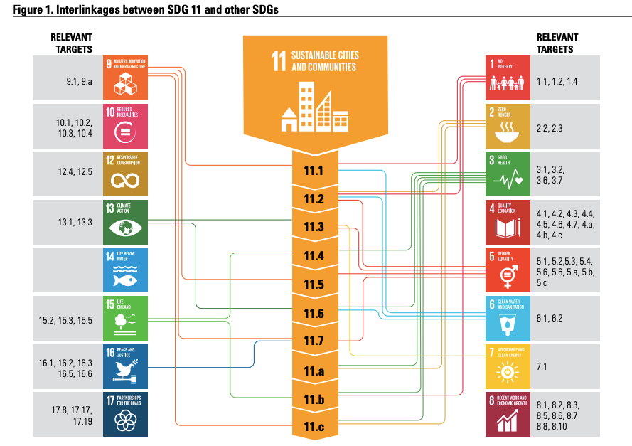
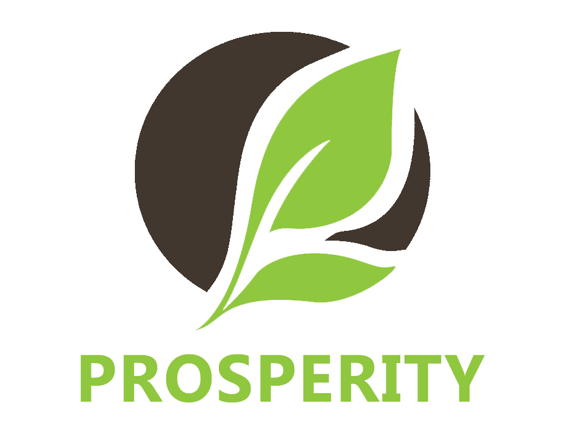
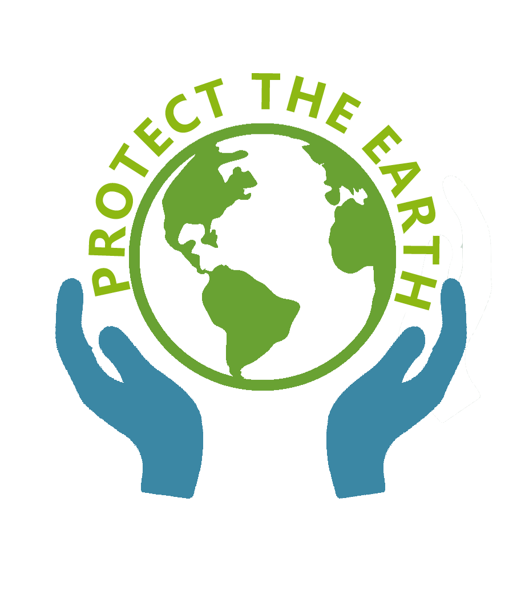
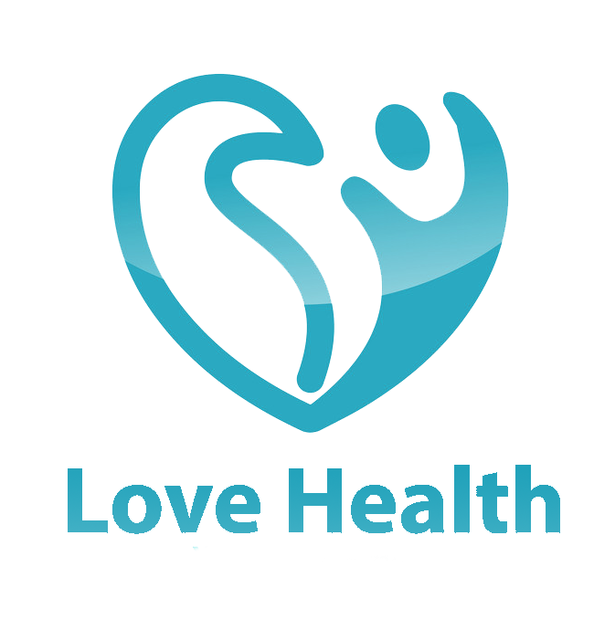
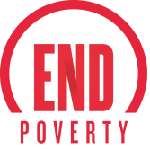
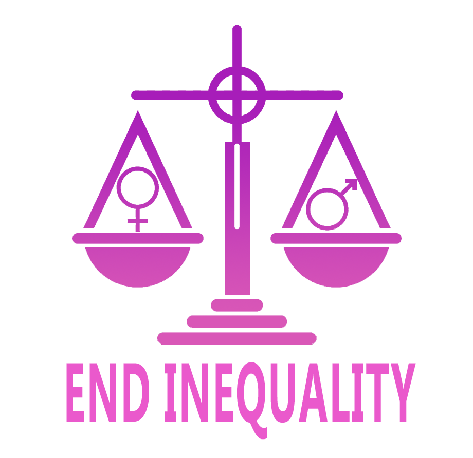

Goals:
Make cities and human settlements inclusive, safe, resilient and sustainable

Targets & Indicators
Mouse over each dot for more info

Timeline
The Sustainable Development Goals (SDGs) were born at the United Nations Conference on Sustainable Development in Rio de Janeiro in 2012.
-
1
2000
Millennium Development Goals (MDGs) were established, providing a framework for global development until 2015.
-
2
2012
The United Nations Conference on Sustainable Development (Rio+20) took place in Rio de Janeiro, Brazil. This conference led to the proposal of the SDGs as a successor framework to the MDGs.
-
3
2015
The United Nations General Assembly formally adopted the 2030 Agenda for Sustainable Development, which included the 17 Sustainable Development Goals, along with 169 targets and 232 indicators.
-
4
2016
The High-level Political Forum on Sustainable Development (HLPF) was established as the central UN platform for the follow-up and review of the SDGs.
-
5
2019
The first comprehensive review of SDG progress was conducted during the UN's SDG Summit held in New York, which took place from September 24-25.
-
6
2020
The COVID-19 pandemic significantly disrupted progress towards the SDGs, highlighting the need for more concerted efforts and global cooperation to achieve the goals by 2030.
The SDGs remain a critical framework for addressing some of the world's most pressing challenges and guiding international efforts to create a more sustainable and equitable world by 2030.
Purposes





The Sustainable Development Goals (SDGs) aim to transform our world.
Upcoming Events
-
Jan
302024 ECOSOC Partnership Forum
-
Sep
13Launch of the First Global Report on Climate and SDGs Synergies
-
Sep
192023 SDG Summit
-
Oct
12Workshop - Building Capacity and Scaling Up Adoption of STI4SDGs Roadmaps in Africa